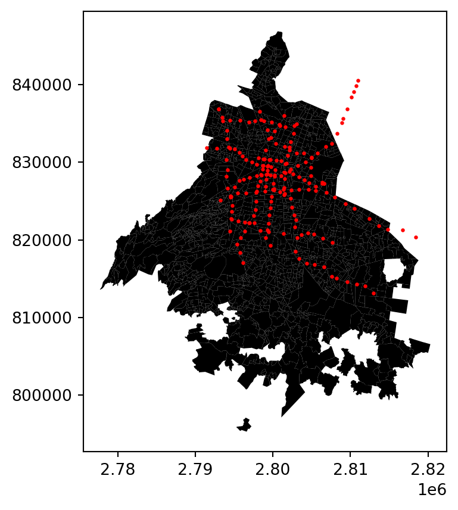

| Clave | Descripción |
|---|---|
| P_15A17_M | Población masculina de 15 a 17 años |
| P_18A24_M | Población masculina de 18 a 24 años |
| PSINDER | Población sin afiliación a servicios de salud |
| PROM_OCUP | Promedio de ocupantes en viviendas particulares habitadas |
| P3YM_HLI | Población de 3 años y más que habla alguna lengua indígena |
2 Data Acquisition and Preprocessing
3 Adquisition
4 Índice de Concentración de desventajas
Construido a partir de cuatro dimensiónes (con base a censo 2010) y reducidad a una componente principal por PCA. Las dimensiones que se exponen en el articulo son: - Porcentaje de masculinos de 15 a 29 - Porcentaje de población sin servicios a salud - Promedio de habitantes que ocupan un hogar privado - Porcentaje de personas que hablan una lengua indigena
Con base al Censo de población de 2020, las dimensiones se resumen de la forma:
La primer parte consta de cargar la base de datos de censo, seleccionar las dimensiones, limpiar la información y preparala para poder hacerla únion de estas en la geometry de la unidd geografica manzanas. Se cargan las librerias necesarias.
## Librerias
import numpy as np
import pandas as pd
import geopandas as gpd
import contextily as ctx
import matplotlib.pyplot as plt
from IPython.display import Markdown
from sklearn.decomposition import PCA
from sklearn.preprocessing import StandardScaler
### Warnings
import warnings
warnings.filterwarnings('ignore')Se carga la información del Censo por unidad manzanas conservando unicamente los campos de interes: ENTIDAD, NOM_ENT, MUN, NOM_MUN LOC, NOM_LOC, AGEB, MZA, POBTOT, P_15A17_M, P_18A24_M, PSINDER, PROM_OCUP y P3YM_HLI
De la base de datos filtramos eliminando las filas que contienen los totales
CENSO_2020 = pd.read_csv(Entradas + 'MANZANAS.csv', encoding = 'Latin-1')
CENSO_2020 = CENSO_2020 [['ENTIDAD','NOM_ENT','MUN',
'NOM_MUN','LOC','NOM_LOC',
'AGEB','MZA','POBTOT',
'P_15A17_M','P_18A24_M','PSINDER',
'PROM_OCUP', 'P3YM_HLI']]
Values = ['Total de la entidad','Total del municipio',
'Total de la localidad urbana', 'Total AGEB urbana']
CENSO_2020 = CENSO_2020.query("NOM_LOC != @Values")
CENSO_2020.head(2) | ENTIDAD | NOM_ENT | MUN | NOM_MUN | LOC | NOM_LOC | AGEB | MZA | POBTOT | P_15A17_M | P_18A24_M | PSINDER | PROM_OCUP | P3YM_HLI | |
|---|---|---|---|---|---|---|---|---|---|---|---|---|---|---|
| 4 | 9 | Ciudad de México | 2 | Azcapotzalco | 1 | Azcapotzalco | 10 | 1 | 159 | * | 8 | 27 | 3.31 | 0 |
| 5 | 9 | Ciudad de México | 2 | Azcapotzalco | 1 | Azcapotzalco | 10 | 2 | 145 | * | 7 | 46 | 3.45 | 0 |
Dentro de la base de datos existe la presencia de filas donde los valores son simbolos o caracteres especiales(*, N/D, 99999, etc), por lo que es necesario remplazarlos por valores NAN.
CENSO_2020 = CENSO_2020.replace({'999999999': np.nan,
'99999999': np.nan,
'*': np.nan,
'N/D': np.nan})
DIM_NUM = CENSO_2020.iloc[: , -6:].columns.tolist()
DIM_TEXT = CENSO_2020.iloc[:, :8].columns.tolist()
CENSO_2020[DIM_NUM] = CENSO_2020[DIM_NUM].astype('float')
CENSO_2020[DIM_TEXT] = CENSO_2020[DIM_TEXT].astype(str)De igual manera la información referida a a las columnas de “Entidad, Municipio, Localidad, AGEB y Manzana”, no presetan el formato necesario para crear la columna CVEGEO, por lo que debemos completar la información de la forma correcta.
Creada la columna CVEGEO, calculamos la dimensión población masculina de 15 a 24 años como la suma de “P_15A17_M y P_18A24_M”. Una vez que hemos creado la dimensión se hacen poco necesarias “P_15A17_M y P_18A24_M, por lo que se eliminan.
## Corrección de información
CENSO_2020['ENTIDAD'] = CENSO_2020['ENTIDAD'].str.zfill(2)
CENSO_2020['MUN'] = CENSO_2020['MUN'].str.zfill(3)
CENSO_2020['LOC'] = CENSO_2020['LOC'].str.zfill(4)
CENSO_2020['AGEB'] = CENSO_2020['AGEB'].str.zfill(4)
CENSO_2020['MZA'] = CENSO_2020['MZA'].str.zfill(3)
CENSO_2020['CVEGEO'] = CENSO_2020[['ENTIDAD', 'MUN',
'LOC','AGEB','MZA']].agg(''.join, axis=1)
## Cálculo de Población masculina de 15 a 24 años
CENSO_2020['P_15A24_M'] = CENSO_2020[["P_15A17_M",
"P_18A24_M"]].sum(axis = 1,
min_count = 1)
## Eliminación de dimensiones
CENSO_2020 = CENSO_2020.drop(['P_15A17_M','P_18A24_M'], axis = 1)
CENSO_2020.head(2)| ENTIDAD | NOM_ENT | MUN | NOM_MUN | LOC | NOM_LOC | AGEB | MZA | POBTOT | PSINDER | PROM_OCUP | P3YM_HLI | CVEGEO | P_15A24_M | |
|---|---|---|---|---|---|---|---|---|---|---|---|---|---|---|
| 4 | 09 | Ciudad de México | 002 | Azcapotzalco | 0001 | Azcapotzalco | 0010 | 001 | 159.0 | 27.0 | 3.31 | 0.0 | 0900200010010001 | 8.0 |
| 5 | 09 | Ciudad de México | 002 | Azcapotzalco | 0001 | Azcapotzalco | 0010 | 002 | 145.0 | 46.0 | 3.45 | 0.0 | 0900200010010002 | 7.0 |
Se carga la base de datos geoespacial que corresponde a la unidad geografica de “manzanas”. Para este caso, el archivo se encuentra en formato “json”. Del archivo, unicamente consideramos las columnas “CVEGEO y geometry”
### Se carga el archivo espacial de Manzanas
MANZA_CDMX = gpd.read_file(Entradas +'MANZA_CDMX.json')
MANZA_CDMX = MANZA_CDMX[['CVEGEO','geometry']]
MANZA_CDMX.head(2)| CVEGEO | geometry | |
|---|---|---|
| 0 | 0901000010898031 | POLYGON ((-99.22982 19.35939, -99.23006 19.359... |
| 1 | 0901000012269024 | POLYGON ((-99.21840 19.36539, -99.21848 19.365... |
Union (merge) de las unidades geoespaciales con la información del Censo de Población y vivienda 2020. En este punto a cada unidad geografica le asignamos la información del censo de población.
### Union a la izquierda con campo llave primaria "CVEGEO" #### Mantener Merge con cualquiera de los dos :)
MERGE = MANZA_CDMX.merge( CENSO_2020,
left_on = 'CVEGEO',
right_on = 'CVEGEO',
how = 'inner')
MERGE.head(2) | CVEGEO | geometry | ENTIDAD | NOM_ENT | MUN | NOM_MUN | LOC | NOM_LOC | AGEB | MZA | POBTOT | PSINDER | PROM_OCUP | P3YM_HLI | P_15A24_M | |
|---|---|---|---|---|---|---|---|---|---|---|---|---|---|---|---|
| 0 | 0901000010898031 | POLYGON ((-99.22982 19.35939, -99.23006 19.359... | 09 | Ciudad de México | 010 | Álvaro Obregón | 0001 | Álvaro Obregón | 0898 | 031 | 93.0 | 16.0 | 4.04 | 0.0 | 3.0 |
| 1 | 0901000012269024 | POLYGON ((-99.21840 19.36539, -99.21848 19.365... | 09 | Ciudad de México | 010 | Álvaro Obregón | 0001 | Álvaro Obregón | 2269 | 024 | 6.0 | NaN | NaN | NaN | NaN |
Siempre es importante saber en que sistema de proyección se encuentran nuestros datos, para eso usamos “crs”
MERGE.crs<Geographic 2D CRS: EPSG:4326>
Name: WGS 84
Axis Info [ellipsoidal]:
- Lat[north]: Geodetic latitude (degree)
- Lon[east]: Geodetic longitude (degree)
Area of Use:
- name: World
- bounds: (-180.0, -90.0, 180.0, 90.0)
Datum: World Geodetic System 1984
- Ellipsoid: WGS 84
- Prime Meridian: GreenwichHacemos un mapa de P_15A24_M para ver su distribución espacial.
fig, ax = plt.subplots(figsize=(8, 8))
ax = MERGE.plot(ax = ax, column='P_15A24_M',
legend=False,
alpha=0.8,
scheme='NaturalBreaks',
cmap='copper',
classification_kwds={'k':6})
ax.set(title='Población Masculina 15 a 24 años, Ciudad de México')
ax.set_axis_off()
plt.show()
Hasta el punto anterior tenemos la información contenida dentro de las manzanas, el paso que sigue es llevar las manzanas a colonias. Para esto es necesario entender que ambos elementos son poligonales y que los centroides de manzanas no necesariamente refieren a la solución contenida dentro de un poligono mayor.
Por eso es necesario usar el criterio de maxima área de la sobreposición de poligonos. Al hablar de área el sistema de proyección debe estar en metros, por lo que si no lo esta se debe cambiar. Para este caso se cambio a EPSG:6362
Se cargan las colonias y se valida que ambos crs se encuentren en metros “6362 o 6362” , en caso contrario es necesrio llevar a cabo una reproyección.
COLONIAS_CDMX = gpd.read_file(Entradas +'COLONIAS.json').rename({ "CVEUT": "CVE_COL"}, axis = 1)
COLONIAS_CDMX['CVEDT'] = COLONIAS_CDMX['CVEDT'].str.zfill(3)
print("Colonias CRS", COLONIAS_CDMX.crs)
print("Manzanas CRS", MERGE.crs)Colonias CRS epsg:4326
Manzanas CRS epsg:4326Los archivos estan en coordenadas geograficas, por lo que se reproyecta
MERGE = MERGE.to_crs(6362)
COLONIAS_CDMX = COLONIAS_CDMX.to_crs(6362)
print("Crs Manzanas", MERGE.crs )
print("Crs Colonias", COLONIAS_CDMX.crs )Crs Manzanas epsg:6362
Crs Colonias epsg:6362Buscamos en este punto identificar la intersección entre colonias y manzanas para asignar a cada manzana (base al criterio de área maxima) la clave de la colonia a la que pertence.
INTERSECCION = gpd.overlay(COLONIAS_CDMX,
MERGE,
how = 'intersection')Se calcula el valor de área para cada poligono intersectado
## Se calcula el area
INTERSECCION['area'] = INTERSECCION.geometry.areaPara el overlay se reordena la información del área de manera descendente y se eliminan los duplicados con base a la “CVEGEO” manteniendo unicamente el primer valor
INTERSECCION = (INTERSECCION.sort_values('area', ascending = False).
drop_duplicates(subset="CVEGEO", keep = 'first').
drop(['geometry','area'], axis = 1))
### Se eliminan columnas no necesarias
INTERSECCION = INTERSECCION.drop(['ENT', 'CVEDT', 'NOMDT', 'DTTOLOC'], axis = 1) #### Se mantiene solo uno En la base de colonias se identificaron caracteres especiales, por lo que se procede a remplazarlos, por su valor correspondiente.
Dic_Ca = {'Ñ': 'Ñ'}
INTERSECCION.replace(Dic_Ca, inplace=True, regex=True)
INTERSECCION.columns = INTERSECCION.columns.to_series().replace(Dic_Ca, regex=True)
INTERSECCION.shape(66353, 17)Se valida que cada manzana este asociada a cada una de las colonias
Recorndado que la relación es una colonia a muchas manzanzanas
“” Por lo que no deben existir manzanas repetididas”
\[M_{n-1} = f(C)\] \[ C \gets M_{n-1}\]
Se valida que no existan manzanas repetidas
INTERSECCION.CVEGEO.value_counts()La relacion de muchas manzanas a una colonia, se valida para cada clave de colonias se repite tantas veces existan manzanas
INTERSECCION.CVE_COL.value_counts()07-320 471
07-263 370
17-078 297
11-057 213
17-076 213
...
04-005 1
08-040 1
11-005 1
05-187 1
05-082 1
Name: CVE_COL, Length: 1797, dtype: int64Aqui validamos como las claves de las manzanas son diferentes para una misma colonia y se entiende la relacion, muchas manzanas a una colonia
INTERSECCION.query('CVE_COL == "07-320"').head(3)| CVE_COL | NOMUT | ID | CVEGEO | ENTIDAD | NOM_ENT | MUN | NOM_MUN | LOC | NOM_LOC | AGEB | MZA | POBTOT | PSINDER | PROM_OCUP | P3YM_HLI | P_15A24_M | |
|---|---|---|---|---|---|---|---|---|---|---|---|---|---|---|---|---|---|
| 32781 | 07-320 | CHINAMPAC DE JUAREZ III | 793 | 0900700014645052 | 09 | Ciudad de México | 007 | Iztapalapa | 0001 | Iztapalapa | 4645 | 052 | 0.0 | 0.0 | 0.0 | 0.0 | 0.0 |
| 31918 | 07-320 | CHINAMPAC DE JUAREZ III | 793 | 0900700014594040 | 09 | Ciudad de México | 007 | Iztapalapa | 0001 | Iztapalapa | 4594 | 040 | 0.0 | 0.0 | 0.0 | 0.0 | 0.0 |
| 32314 | 07-320 | CHINAMPAC DE JUAREZ III | 793 | 0900700014611041 | 09 | Ciudad de México | 007 | Iztapalapa | 0001 | Iztapalapa | 4611 | 041 | 0.0 | 0.0 | 0.0 | 0.0 | 0.0 |
5 Análisis de Componentes Principales (PCA)
En esta sección se cálcula el indice de Concetración de desventajas mediante la reducción de las dimensiónes por componentes principales (PCA). Esto se hace a nivel Alcaldias y Delegaciones. La información a nivel alcaldia y delegacion es un proceso de reagrupacion y nuevos calculos de los valores.
Para calcular la componente principal se ha creado una funcion que encapsula los siguientes procesos: 1. Seleccion de las dimensiones con las que se calcula el indice 2. Se normaliza la informacion por Z-Score 3. Se determina el número de componentes a reducir la información 4. Se calcula la varianza total por respecto al numero de componentes 5. Se indexan los resultados a la base de datos como una nueva columna con un nombre de clave
def CONC_DIS (TABLA, DIM_CLAVE, PCA_NAME):
### Seleccion de las dimensiones con las que se calcula el indice de desventajas "PSINDER; PROM_OCUP; P3YM_HLI; P_15A24_M"
PCA_X = TABLA.drop([DIM_CLAVE], axis = 1)
PCA_y = TABLA[[DIM_CLAVE]]
### Se normaliza la informacion por Z-Score
S_TRANSF = StandardScaler()
PCA_X_SCALER = pd.DataFrame( S_TRANSF.fit_transform(PCA_X),
columns = PCA_X.columns)
### Se determina el número de componentes
PCA_N = PCA(n_components = 1)
PCA_COMPONENTE = PCA_N.fit_transform(PCA_X_SCALER)
### Se calcula la varianza total por respecto al numero de componentes
VARIANZA_TOTA = PCA_N.explained_variance_ratio_.sum() * 100
print("\n Total de la variancia explicada por la componente \n", round(VARIANZA_TOTA,3), "%")
### Se indexan los resultados a la base de datos como una nueva columna con clave DIS_COL = concentrated disadvantage component
TABLA[PCA_NAME] = PCA_COMPONENTE
TABLA = TABLA[[DIM_CLAVE, PCA_NAME]]
return (TABLA)5.0.1 Nivel Colonias
Para este punto agrupamos los datos por nivel colonia para extraer el valor del índice por “PCA”
COLONIA_PCA = pd.DataFrame(INTERSECCION.groupby(['CVE_COL']).agg({'PSINDER':'sum',
'PROM_OCUP': 'mean',
'P3YM_HLI':'sum',
'P_15A24_M': 'sum'}).reset_index())
COLONIA_PCA.head(2)| CVE_COL | PSINDER | PROM_OCUP | P3YM_HLI | P_15A24_M | |
|---|---|---|---|---|---|
| 0 | 02-001 | 496.0 | 2.907000 | 7.0 | 138.0 |
| 1 | 02-002 | 813.0 | 3.282381 | 43.0 | 219.0 |
Usamos la función creada en los datos para obtener los resultados.
### Revalidación de información
DESVE_COL = CONC_DIS (COLONIA_PCA, 'CVE_COL', 'DIS_COL')
DESVE_COL.head(2)
Total de la variancia explicada por la componente
66.816 %| CVE_COL | DIS_COL | |
|---|---|---|
| 0 | 02-001 | -1.121714 |
| 1 | 02-002 | -0.533961 |
5.0.2 Nivel Alcaldias
El Agrupamiento de datos por nivel Alcaldia para “PCA”. Recordando que la clave de Alcaldia == Municipio la podemos observar de la forma: DATA_FIN_USE.NOM_MUN.value_counts()
ALCALDIA_PCA = pd.DataFrame(INTERSECCION.groupby(['MUN']).agg({'PSINDER':'sum',
'PROM_OCUP': 'mean',
'P3YM_HLI':'sum',
'P_15A24_M': 'sum'}).reset_index())
ALCALDIA_PCA.head(2)| MUN | PSINDER | PROM_OCUP | P3YM_HLI | P_15A24_M | |
|---|---|---|---|---|---|
| 0 | 002 | 90063.0 | 3.005215 | 2139.0 | 27478.0 |
| 1 | 003 | 160637.0 | 2.866638 | 6103.0 | 39714.0 |
Aplicamos la funcion creada para obtener los resultados a nivel alcaldia
### Aplicando la función creada arriba
DESVE_ALCA = CONC_DIS (ALCALDIA_PCA, 'MUN','DIS_MUN')
DESVE_ALCA.head(2)
Total de la variancia explicada por la componente
74.241 %| MUN | DIS_MUN | |
|---|---|---|
| 0 | 002 | -0.996294 |
| 1 | 003 | -0.069455 |
7 Variables de Control
7.1 METRO
METRO_CDMX = gpd.read_file(Entradas +'STC_Metro.json').to_crs(6362)
METRO_CDMX = METRO_CDMX[['CVE_EST','geometry']]
METRO_CDMX.head(2)| CVE_EST | geometry | |
|---|---|---|
| 0 | STC0101 | POINT Z (2806320.502 827386.150 0.000) |
| 1 | STC0102 | POINT Z (2805539.596 826882.979 0.000) |
base = COLONIAS_CDMX.plot(color ='black',figsize=(5,5))
METRO_CDMX.plot(ax = base, color = 'red', markersize = 2, figsize=(5,5))<AxesSubplot: >
METRO_CDMX = gpd.sjoin(COLONIAS_CDMX,
METRO_CDMX[['CVE_EST','geometry']],
how = "inner",
op = 'contains').rename({'CVEDT': 'MUN',
'CVE_EST': 'METRO'}, axis = 1)
METRO_CDMX.head(2)| ENT | MUN | NOMDT | DTTOLOC | CVE_COL | NOMUT | ID | geometry | index_right | METRO | |
|---|---|---|---|---|---|---|---|---|---|---|
| 2 | 9 | 002 | AZCAPOTZALCO | 05 | 02-005 | ANGEL ZIMBRON | 3 | POLYGON ((2794087.362 833224.900, 2794100.255 ... | 102 | STC0704 |
| 21 | 9 | 002 | AZCAPOTZALCO | 03 | 02-025 | EL ROSARIO C (U HAB) | 22 | POLYGON ((2793328.039 837630.178, 2793307.521 ... | 88 | STC0601 |
METRO_COL = pd.DataFrame(METRO_CDMX.groupby(['CVE_COL']).agg({'METRO':'count'}).reset_index())
METRO_MUN = pd.DataFrame(METRO_CDMX.groupby(['MUN']).agg({'METRO':'count'}).reset_index())### Resultados Concentración de desventajas + Desorden Social + Desorden Físico + METRO
### NIVEL COLONIA
COLONIA_RESULTADOS = COLONIA_RESULTADOS.merge(METRO_COL,
left_on = 'CVE_COL',
right_on = 'CVE_COL',
how = 'left')
COLONIA_RESULTADOS.head(5)| CVE_COL | DIS_COL | SOCIAL_COL | FISICO_COL | METRO | |
|---|---|---|---|---|---|
| 0 | 02-001 | -1.121714 | -0.899873 | -1.004272 | NaN |
| 1 | 02-002 | -0.533961 | 0.628847 | -0.193206 | NaN |
| 2 | 02-003 | -1.193403 | -1.425013 | -1.044140 | NaN |
| 3 | 02-005 | -1.175400 | -0.988030 | -0.609931 | 1.0 |
| 4 | 02-006 | -0.459954 | 1.012260 | -0.483310 | NaN |
### Resultados Concentración de desventajas + Desorden Social + Desorden Físico + METRO
### NIVEL ALCALDIA
ALCALDIA_RESULTADOS = ALCALDIA_RESULTADOS.merge(METRO_MUN,
left_on = 'MUN',
right_on = 'MUN',
how = 'left')
ALCALDIA_RESULTADOS.head(5)| MUN | DIS_MUN | SOCIAL_MUN | FISICO_MUN | METRO | |
|---|---|---|---|---|---|
| 0 | 002 | -0.996294 | -0.839195 | -0.647192 | 10.0 |
| 1 | 003 | -0.069455 | 0.905507 | 0.744289 | 6.0 |
| 2 | 004 | -1.304359 | -2.897155 | -2.414544 | NaN |
| 3 | 005 | 2.040898 | 3.474421 | 3.265199 | 20.0 |
| 4 | 006 | -0.650310 | -0.448365 | -0.774346 | 10.0 |
7.2 METROBUS
METROBUS_CDMX = gpd.read_file(Entradas +'STC_MetroBus.json').drop(['id', 'description',
'styleUrl', 'stroke-opacity', 'stroke',
'icon-opacity', 'icon-color', 'icon-scale',
'icon'], axis = 1).to_crs(6362)
METROBUS_CDMX.head(2)| SISTEMA | NOMBRE | LINEA | EST | CVE_EST | CVE_EOD17 | TIPO | ALCALDIAS | AÑO | geometry | |
|---|---|---|---|---|---|---|---|---|---|---|
| 0 | Metrobús | Terminal 1 - Aeropuerto | 04 | 41 | MB0441 | Venustiano Carranza | POINT Z (2805342.914 829460.805 0.000) | |||
| 1 | Metrobús | Terminal 2 - Aeropuerto | 04 | 42 | MB0442 | Venustiano Carranza | POINT Z (2806045.690 827948.207 0.000) |
base = COLONIAS_CDMX.plot(color ='black',figsize=(5,5))
METROBUS_CDMX.plot(ax = base, color = 'red', markersize = 2, figsize=(5,5))<AxesSubplot: >METROBUS_CDMX = gpd.sjoin(COLONIAS_CDMX,
METROBUS_CDMX[['CVE_EST','geometry']],
how = "inner",
op = 'contains').rename({'CVEDT': 'MUN',
'CVE_EST': 'METROBUS'}, axis = 1)
METROBUS_CDMX.head(2)| ENT | MUN | NOMDT | DTTOLOC | CVE_COL | NOMUT | ID | geometry | index_right | METROBUS | |
|---|---|---|---|---|---|---|---|---|---|---|
| 20 | 9 | 002 | AZCAPOTZALCO | 03 | 02-024 | EL ROSARIO B (U HAB) | 21 | POLYGON ((2792441.340 837336.669, 2792439.955 ... | 238 | MB0603 |
| 21 | 9 | 002 | AZCAPOTZALCO | 03 | 02-025 | EL ROSARIO C (U HAB) | 22 | POLYGON ((2793328.039 837630.178, 2793307.521 ... | 236 | MB0601 |
METROBUS_COL = pd.DataFrame(METROBUS_CDMX.groupby(['CVE_COL']).agg({'METROBUS':'count'}).reset_index())
METROBUS_MUN = pd.DataFrame(METROBUS_CDMX.groupby(['MUN']).agg({'METROBUS':'count'}).reset_index())### Resultados Concentración de desventajas + Desorden Social + Desorden Físico + METRO + METROBUS
### NIVEL COLONIA
COLONIA_RESULTADOS = COLONIA_RESULTADOS.merge(METROBUS_COL,
left_on = 'CVE_COL',
right_on = 'CVE_COL',
how = 'left')
COLONIA_RESULTADOS.head(2)| CVE_COL | DIS_COL | SOCIAL_COL | FISICO_COL | METRO | METROBUS | |
|---|---|---|---|---|---|---|
| 0 | 02-001 | -1.121714 | -0.899873 | -1.004272 | NaN | NaN |
| 1 | 02-002 | -0.533961 | 0.628847 | -0.193206 | NaN | NaN |
### Resultados Concentración de desventajas + Desorden Social + Desorden Físico + METRO + METROBUS
### NIVEL ALCALDIA
ALCALDIA_RESULTADOS = ALCALDIA_RESULTADOS.merge(METROBUS_MUN,
left_on = 'MUN',
right_on = 'MUN',
how = 'left')
ALCALDIA_RESULTADOS.head(5)| MUN | DIS_MUN | SOCIAL_MUN | FISICO_MUN | METRO | METROBUS | |
|---|---|---|---|---|---|---|
| 0 | 002 | -0.996294 | -0.839195 | -0.647192 | 10.0 | 8.0 |
| 1 | 003 | -0.069455 | 0.905507 | 0.744289 | 6.0 | 11.0 |
| 2 | 004 | -1.304359 | -2.897155 | -2.414544 | NaN | NaN |
| 3 | 005 | 2.040898 | 3.474421 | 3.265199 | 20.0 | 72.0 |
| 4 | 006 | -0.650310 | -0.448365 | -0.774346 | 10.0 | 17.0 |